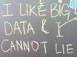

This is a template for a simple marketing or informational website. It includes a large callout called a jumbotron and three supporting pieces of content. Use it as a starting point to create something more unique.Bacon ipsum dolor amet kielbasa rump corned beef capicola pancetta t-bone ham pork shankle. Brisket porchetta jowl shank meatloaf tri-tip, strip steak venison picanha shankle chuck ball tip leberkas beef salami. Pork chop prosciutto sirloin cow, chuck drumstick tri-tip spare ribs salami tongue meatball rump t-bone ham hock. Meatball tri-tip boudin chicken.
This is a second paragraph of text and we'll add some bacon ipsum. Bacon ipsum dolor amet kielbasa rump corned beef capicola pancetta t-bone ham pork shankle. Brisket porchetta jowl shank meatloaf tri-tip, strip steak venison picanha shankle chuck ball tip leberkas beef salami. Pork chop prosciutto sirloin cow, chuck drumstick tri-tip spare ribs salami tongue meatball rump t-bone ham hock. Meatball tri-tip boudin chicken.
{kind=link}